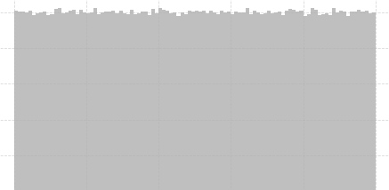
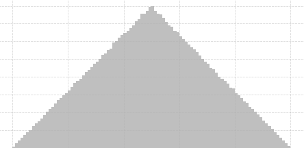
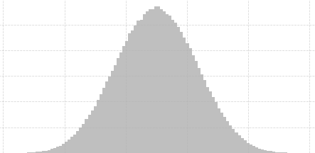

| Drawing settings | |
| Scale ({{ drawingSettings.scale }}) Scaling of the canvas. |
|
| Position Y ({{ base.y }}) Position of the object along the Y-axis. |
|
| Recursion | |
| Max depth ({{maxDepth}}) The amount of recursive steps. |
|
| Branching | |
| Branch length ({{branchLength}}) Change the length of the branches. |
|
| Damping ({{branchDamping}}) Change how much the length is decreased over each recursive step. |
|
| Angle ({{branchAngle}}) Change the angle of the branches. |
|
| Branch length stdev ({{branchLengthStdev}}) Standard deviation of the branch length. |
|
| Probability distribution (length) Probability distribution used for random branch length. |



|
| Branch angle stdev ({{branchAngleStdev}}) Standard deviation of the branch angle. |
|
| Probability distribution (angle) Probability distribution used for random branch angle. |
|
| Inverse damping Damp the curve, so it curves less at the root. |
|
| Inverse damping factor ({{inverseDampingFactor}}) Changes the curve of the inverse damping. |
|